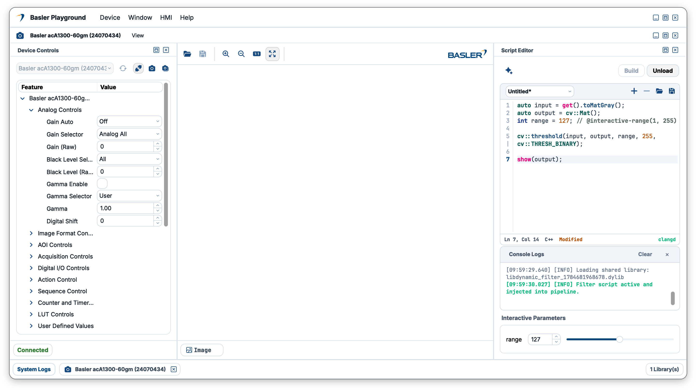

Unified Workspace for the Entire
Basler Vision Ecosystem
Control every Basler 2D camera, 3D sensor, and CoaXPress framegrabber in a single unified suite. Featuring Interactive Parameters for live JIT algorithm hot-swapping without stopping your acquisition pipeline.

Built for High-Speed Vision & Industrial Automation
Modular architecture ensuring strict boundary isolation, zero-copy buffer handoffs, and instant JIT parameter hot-swapping.
Session Workspace Architecture
Unified multi-device authority and multi-window workspace for managing active camera streams, parameters, and live inspection pipelines.
High-Performance 2D & 3D Engine
High-speed visualization engine for 2D image pan/zoom, 3D point cloud surfaces, profile measurements, and ROI tools.
Interactive Parameters & JIT Hot-Swapping
Write processing scripts directly in Script Editor. Simple // @interactive annotations automatically construct live GUI sliders instantly.
Basler 2D & 3D Cameras
Complete acquisition for Basler GigE, USB3, and 3D vision cameras with status contracts: Idle, Disconnected, Connected, and Live Grabbing.
Basler Framegrabber (CoaXPress)
Hardware abstraction for Basler CoaXPress framegrabbers supporting multi-stream DMA ring buffers and microsecond timestamping.
LMI 3D Sensors (GoPxL SDK)
Full support for all LMI Gocator 3D sensors and profilers powered by GoPxL SDK for dynamic 3D profile parameter edits and surface point cloud extraction.
Auto-Generated JIT Interactive Parameters
Add simple // @interactive annotations in code to construct live GUI parameter controls instantly without restarting image acquisition.
// Dynamic algorithm script
auto input = get().toMatGray();
auto output = cv::Mat();
int range = 127; // @interactive-range(1, 255)
cv::threshold(input, output, range, 255,
cv::THRESH_BINARY);
show(output);Basler Korea Ecosystem
Modular open-source hardware repositories maintained by Basler Korea Inc. (BaslerKR) on GitHub.
Hardware driver & acquisition interface for Basler 2D and 3D vision cameras.
github.com/BaslerKR/Camera ↗High-throughput hardware interface for Basler CoaXPress framegrabbers.
github.com/BaslerKR/Framegrabber ↗3D sensor integration module for LMI Gocator devices running on GoPxL SDK.
github.com/BaslerKR/Gocator ↗